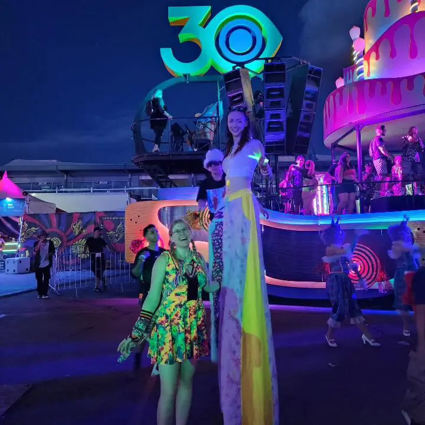
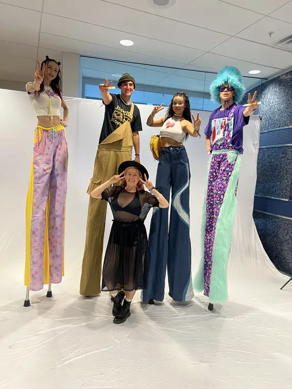
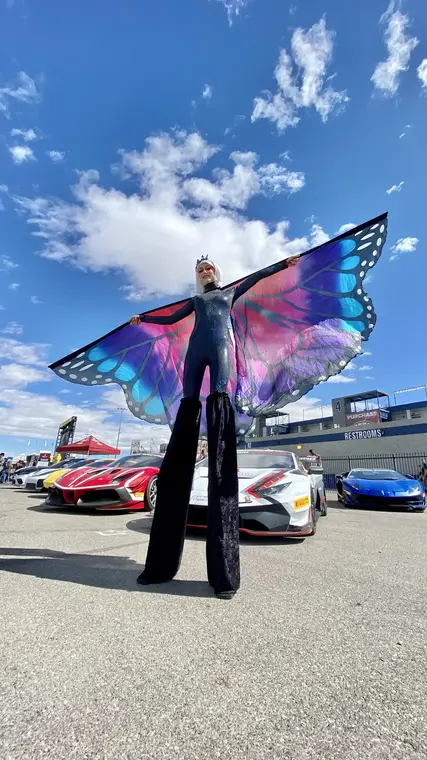
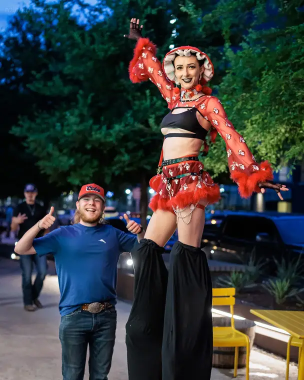
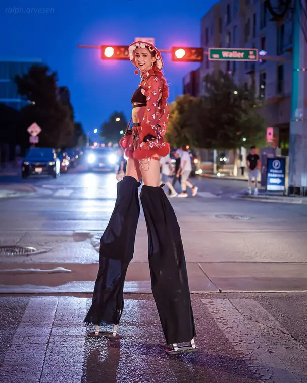
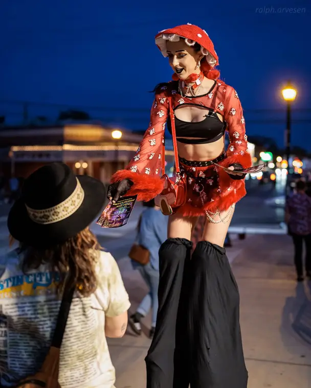
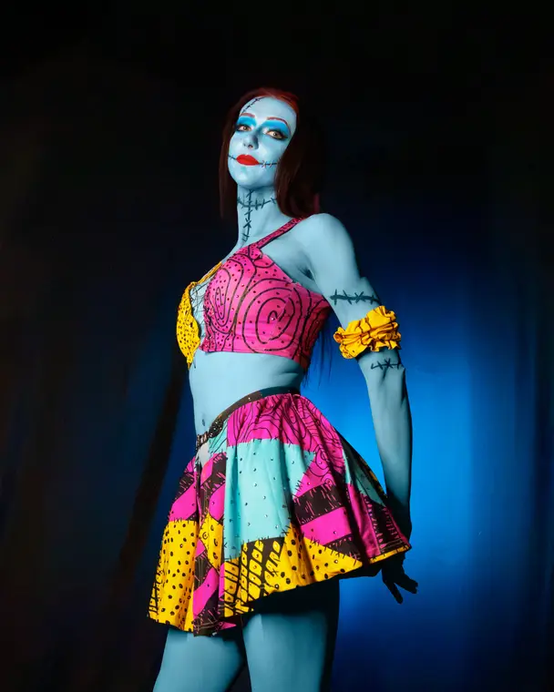
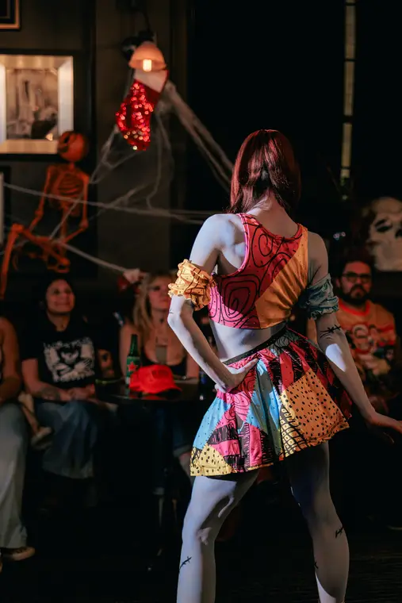
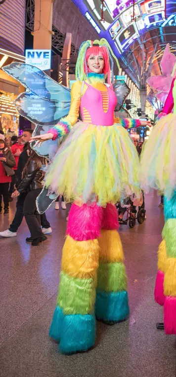
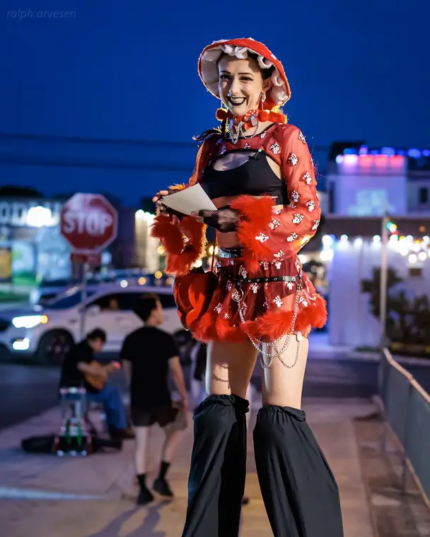

In Pictures
Stilt Walking Gallery
21 photographs from live bookings, festivals and shoots. Tap any image to enlarge.


















Caroline Godwin · Discipline 04
Ten feet tall, in costumes she built herself, moving through a crowd. Stilts are the cheapest way to make a space feel like an event the moment guests walk in — and the easiest act to add fire, LED or flow props to.
What's in the Set
Meet, greet, pose, move on. The default booking: a costumed character working a crowd for a set number of hours.
Fire fans and fire breathing performed from stilts. Rare, and it stops a festival crowd dead.
Illuminated stilt dancing with LED fans — the night version, and a favourite at club and ball events.
A character positioned as a photo op with a handler, so guests queue, pose and post.
Handing out product, flyers or samples from height — impossible to walk past.
Butterfly, mushroom, flower, Cheshire Cat, Sally, rainbow NYE, 90s, crimson playa and more. Costumes are built in-house, so custom builds to a brand or theme are possible.
In Pictures
21 photographs from live bookings, festivals and shoots. Tap any image to enlarge.










Where & How It Happens
EDC Las Vegas, June Jam, Burning Man. Loud, wide-open, mobile — stilts' natural habitat.
Fremont Street, downtown Las Vegas, sidewalk activations, parades.
Las Vegas Motor Speedway and similar — long distances covered, high visibility.
Entrance greeting, booth traffic driving, and brand-costumed characters.
Halloween, NYE, themed galas, pool parties.
Fine wherever the ceiling clears roughly 12 ft and doorways can be negotiated — flag any low doorframes on the route in advance.
Figures tagged Caroline to confirm are drafted from standard industry practice and still need to be checked against her actual equipment before this page goes to a client.
Everything Else She Does
Ready to Book?
For stilt walking performances, private events, workshops and collaborations — inquiries receive a response within 24 hours.
info@hw-talent.com Get in Touch